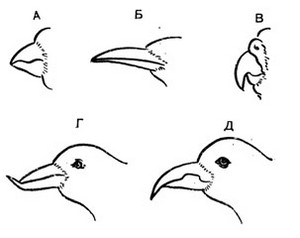
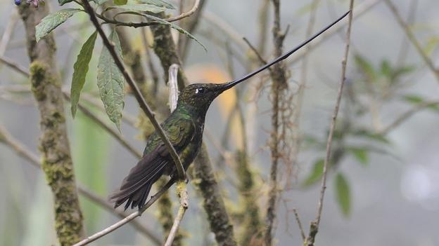
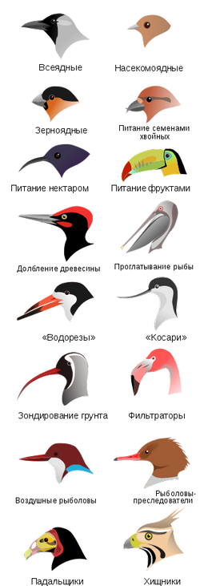

Главная > Внешний вид
Клюв у птицКлюв — орган птиц, черепах, головоногих моллюсков, некоторых динозавров (орнитоподов, цератопсов и некоторых тероподов) и утконоса, образованный удлинёнными беззубыми челюстями, одетыми роговым чехлом — рамфотекой.  Разновидность формы клюва Функции клюва весьма разнообразны, что отражается на разнообразии его форм. Служит для схватывания добычи, её расчленения, для осязания, нападения и защиты, передвижения, для долбления, рытья, зондирования грунта, а также для сложных действий, связанных с уходом за оперением и постройкой гнезда и др. Разнообразие функций клюва отчасти обеспечивается подвижностью надклювья, осуществляемой за счёт кинетизма черепа. Движения надклювья и нижней части клюва — подклювья — координируются дифференцированной системой жевательных мышц.  Колибри-мечеклюв |
|
|
В наибольшей степени форма клюва обусловлена характером пищевой специализации. У многих птиц основание верхней части клюва (надклювье) покрыто восковицей. У птиц, не имеющих восковицы, проксимальный отдел рамфотеки надклювья, постепенно утоньшаясь, переходит в кожный покров лобной части черепа. У эмбрионов птиц на вершине надклювья образуется яйцевой зуб. Виды клювов:
Цедильный аппарат важное приобретение таких птиц как фламинго и большинства гусеобразных. На краях клюва располагаются частые поперечные роговые пластинки, в которых застревают мелкие объекты при процеживании воды. На внутренних краях клювов некоторых ископаемых птиц (гесперорнисообразные) имелись зубы. Кроме птиц, клювоподобные образования есть у клоачных млекопитающих, черепах, двужаберных головоногих моллюсков, а также имелись у птерозавров. У археоптерикса, считающегося первой известной птицей, клюв отсутствовал. |
 Разнообразие форм клюва (морфологические адаптации), которые обеспечивают у одних птиц - хватание добычи, иногда её расчленение, у других — долбление, рытьё и т. д., а также сложные манипуляции |